Tiếng Việt · Khung bo góc · Icon nghiệp vụ · Bản chỉnh sửa có 11 trang.
Vị trí đề xuất: Chương 1. Mã file chưa là số hình chính thức.
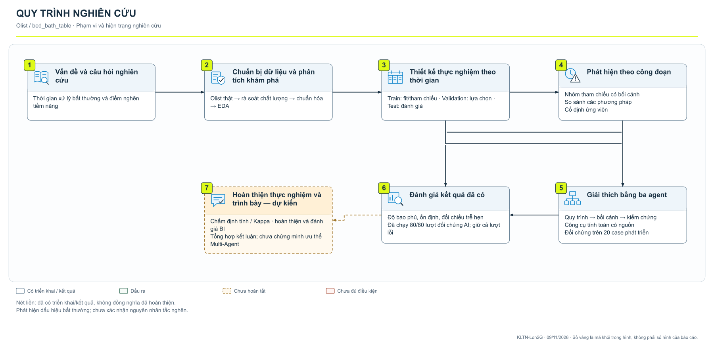
Vị trí đề xuất: Chương 2. Mã file chưa là số hình chính thức.
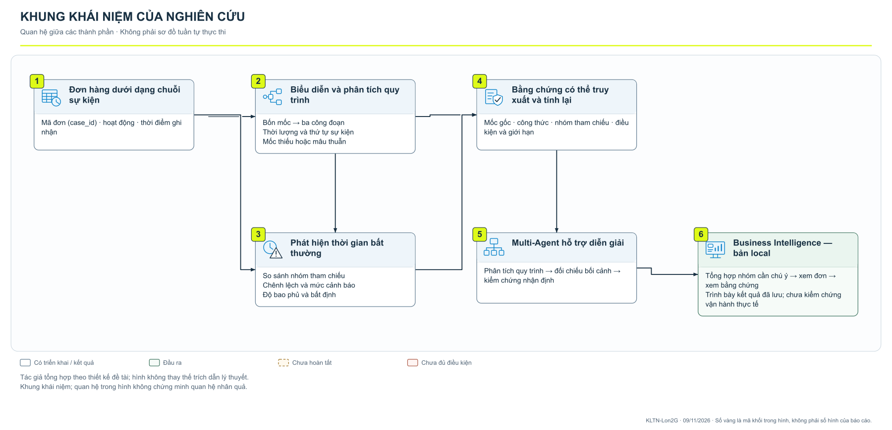
Vị trí đề xuất: Chương 3. Mã file chưa là số hình chính thức.
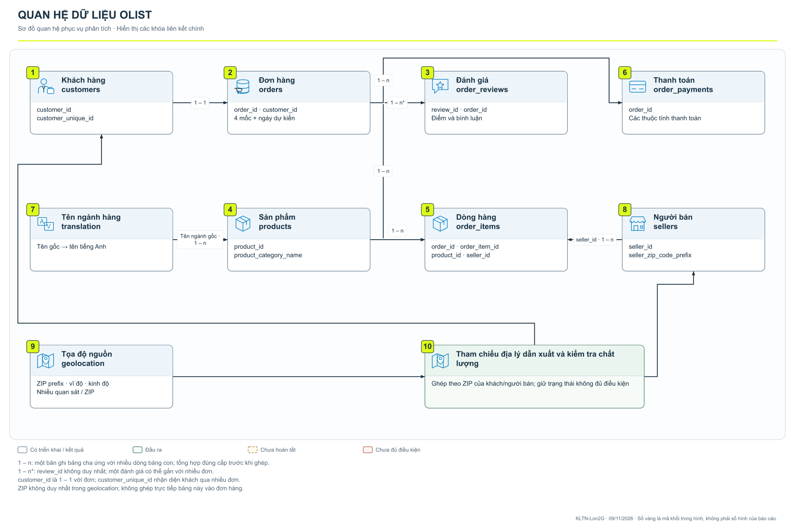
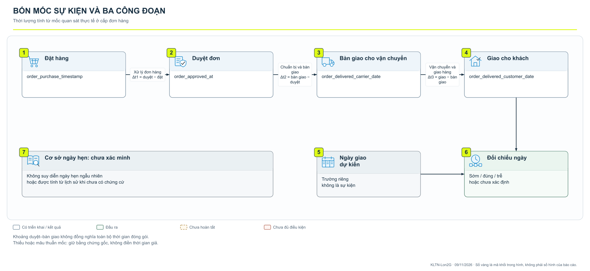
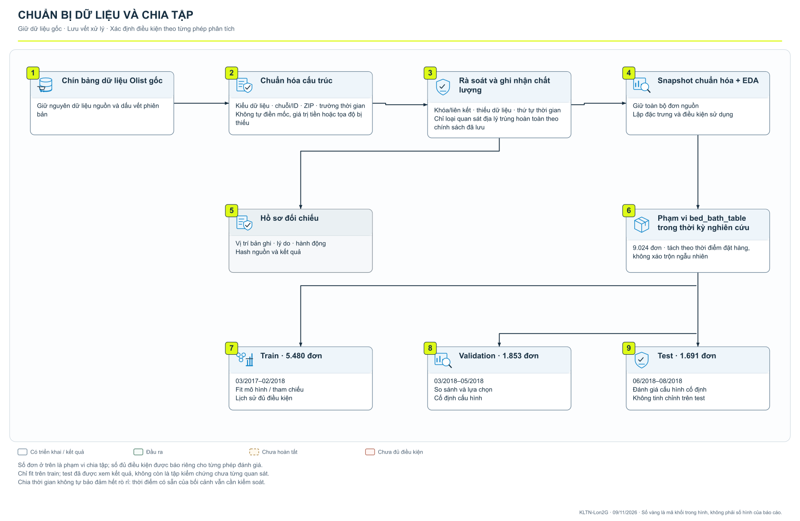
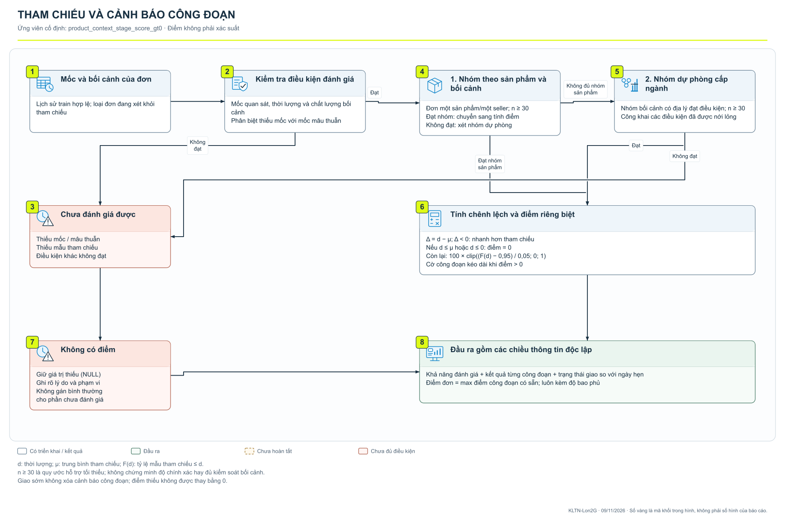
Vị trí đề xuất: Chương 4. Mã file chưa là số hình chính thức.
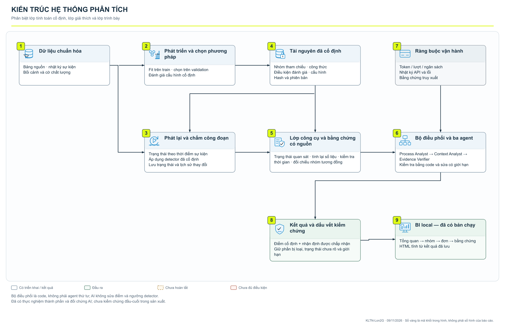
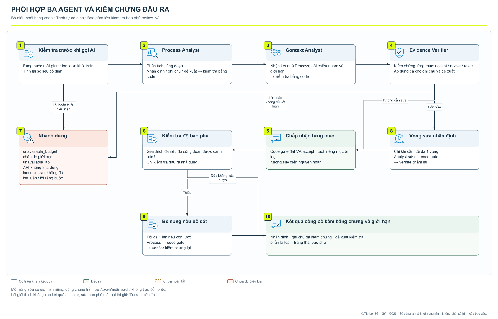
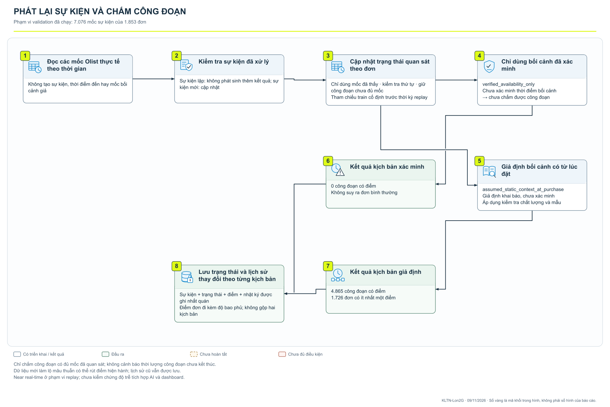
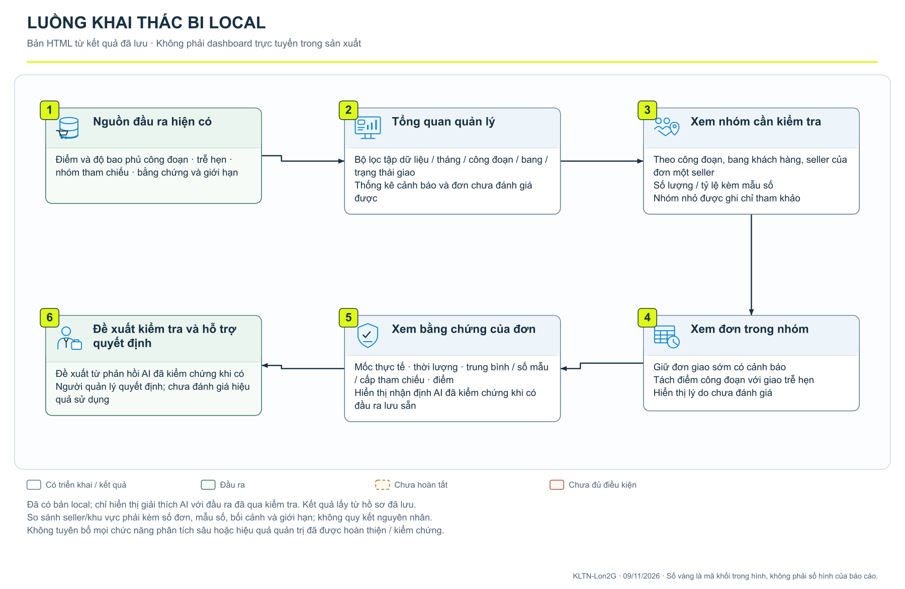
Vị trí đề xuất: Chương 5. Mã file chưa là số hình chính thức.
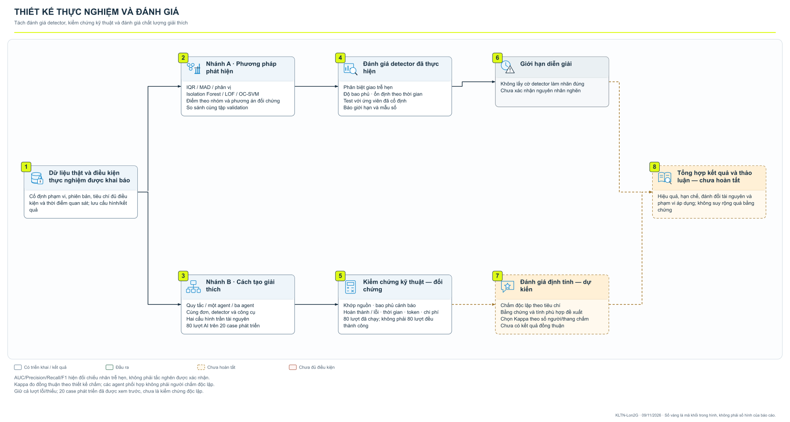